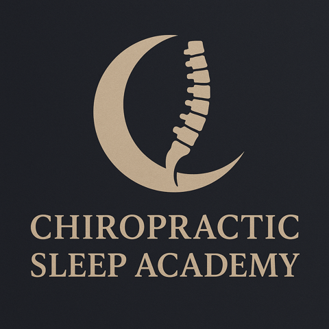

Chiropractic · Sleep · Airway · Structure
Your airway is partly shaped by your skull, jaw, nose, and neck. I'm Dr. Robert Zeravica — chiropractor, educator, and founder of Chiropractic Sleep Academy — advancing a skull-down, sleep-first way to look at breathing and sleep.
Where do you belong?
Tell me who you are and I'll point you to the right place. Each path has its own next step.
For You
Snoring, fatigue, mouth-breathing, grinding, CPAP struggles, or morning headaches? Let's look at your airway and structure — skull-down.
For Chiropractors
Learn Structural Sleep & Airway Chiropractic and add a credible sleep-and-airway focus to your practice through Chiropractic Sleep Academy.
A Separate Service
Support for California workers filing EDD State Disability Insurance (SDI) — medical certification, recertification, and forms.
For Organizers & Peers
Colleges, conferences, CE groups, dentists, physicians, researchers, and podcasts. Bring the structural layer to the airway conversation.
The Idea
Sleep and breathing problems are usually looked at through CPAP, dental appliances, medicine, or surgery. Those matter. But the shape of your head, jaw, nose, and neck matters too — and structure is where chiropractic can help.
We start at the top — the skull, face, nose, and jaw — not just the lower back. The structures around the airway shape how you breathe.
Sleep and breathing come first in the conversation. A home sleep test gives us real numbers to work from, like an X-ray gives us a picture.
We evaluate posture, cranial structure, and the airway, then track changes over time with objective measures — not guesswork.
Where structure fits
Airway care runs along a path. Structural care may help earlier and works alongside medicine and dentistry — never against them. Chiropractors do not diagnose or treat sleep apnea; we evaluate structure and coordinate care.
Chiropractic, cranial and postural care, VAET, nasal-airway evaluation, sleep testing, and CBCT imaging.
CPAP, oral appliances, and other options guided by physicians and dentists.
Medication or surgery when a patient's care team decides it's appropriate.
Meet Dr. Robert Zeravica
"I built Chiropractic Sleep Academy because the system I was looking for did not exist."
I've been a chiropractor since 1999 and spent the last 13-plus years focused on sleep, airway, and cranial structure. My background includes cranial and postural work, SOT, Applied Kinesiology, and Chiropractic BioPhysics. I came to sleep the honest way — for years, patients kept telling me they were sleeping better after an adjustment, and I couldn't ignore it.
I'm a U.S. Marine Corps veteran, a California CE lecturer, and the founder of a growing movement to teach chiropractors how to recognize the structural side of sleep and breathing — and how to work well with dentists, physicians, and sleep specialists.
The Ecosystem
This site is the hub. Everything below grows from a single idea: sleep has a structural component, and chiropractic should understand it.

For Chiropractors
Chiropractic Sleep Academy trains chiropractors to recognize, screen, evaluate, and talk about structural sleep and airway care — and to collaborate with dentists, ENTs, and sleep physicians. You live the model as a patient first, then learn to run it.
ChiropracticSleepAcademy.net
Advanced Technique
Viscerocranial Airway Expansion Therapy
VAET is an advanced set of structural and cranial airway techniques, including careful, balloon-assisted procedures focused on the structures around the nasal airway. The goal is to evaluate and support structural function around breathing — measured objectively and tracked over time.
VAET is a structural approach. It is not a treatment for a medical diagnosis and does not claim to cure sleep apnea or replace CPAP, oral appliances, or medical care. Care is coordinated with your medical and dental providers.
Read more about VAET →A separate part of my practice helps eligible California workers navigate California EDD State Disability Insurance (SDI) — union workers, nurses, teachers, drivers, and laborers who are temporarily unable to work because of a qualifying health condition.
This service is completely separate from Chiropractic Sleep Academy and structural airway care. We help you file correctly and honestly — we do not guarantee approval or any specific outcome.
Speaking & Collaboration
I speak to chiropractic colleges, CE groups, conferences, dentists, physicians, and podcasts — and I collaborate with airway-aware professionals across fields. The message is simple: chiropractic can add a structural voice, working alongside everyone else at the table.
Talks & topics
Your Next Step
Whether you're a patient, a chiropractor, an organizer, or a California worker who needs disability help — the first step is the same. Reach out, and we'll find your right path.
Prefer email? Write to DrZeravicaOffice@gmail.com